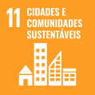
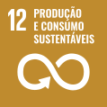

Sobre nós
O BoleiaISEP é uma plataforma de partilha de boleias exclusiva para alunos do ISEP, feita pela Equipa Noddy em Laboratório de Projeto 1.
O problema · Vantagens · Impacto · Como funciona · Preço e segurança · Funcionalidades · Equipa · Fontes
O problema
Para quem não tem carro, o transporte público pode significar esperas e viagens demoradas. Ao mesmo tempo, há colegas que fazem o mesmo caminho com lugares livres.
Quem mora fora do Porto, tem poucas opções de transporte ou precisa de várias ligações para chegar às aulas sente isto todos os dias. As deslocações para o polo da Asprela também aumentam o tráfego e a falta de estacionamento.
A solução é simples: o carpooling, em que duas ou mais pessoas partilham o mesmo carro e dividem as despesas. O BoleiaISEP põe estes dois grupos em contacto.
Partilhar boleia compensa porque:
- poupas dinheiro, com a partilha dos custos de transporte;
- ganhas tempo, com menos esperas e mais tempo para estudo e descanso;
- ajudas o ambiente, com menos carros em circulação e menos emissões de CO₂.
Fontes: AMPorto (2016); European Environment Agency (2026).
Vantagens
O nosso objetivo é facilitar a partilha de boleias entre alunos do ISEP, com um preço definido pela plataforma ou de forma gratuita.
- Uma alternativa aos transportes: mais rápida e económica, ou mesmo gratuita, para quem demora muito no transporte público.
- Despesas partilhadas: quem conduz reparte os custos da viagem, se assim pretender.
- Lugares livres aproveitados: cada carro que já circula passa a levar mais colegas.
Impacto nos Objetivos de Desenvolvimento Sustentável
Cada boleia partilhada contribui para três dos 17 Objetivos de Desenvolvimento Sustentável das Nações Unidas. O ODS 11 é o mais importante para o projeto.

Ao rentabilizar os lugares vazios dos carros que já circulam, reduz o tráfego, a procura por estacionamento e a pressão sobre os transportes públicos.

Ao maximizar a utilização de recursos existentes, como veículos e combustível, segundo os princípios da economia partilhada.
Ao reduzir as emissões de gases com efeito de estufa por cada viagem partilhada que substitua um carro com apenas um condutor.
Fonte: Organização das Nações Unidas (2026). Ícones: United Nations – Sustainable Development Goals.
Como funciona
- Entra com o email institucional do ISEP.
- Publica a tua boleia, se conduzes: percurso, dia, hora e lugares disponíveis.
- Pesquisa e reserva, se precisas de boleia: procura pela localidade e reserva o lugar.
- Paga e viaja: 30 minutos antes da partida pagas o preço final para confirmar o lugar, ou a boleia é gratuita.
Há muito carro com lugares vazios. Em 2017, o automóvel era o principal meio de transporte na Área Metropolitana do Porto (INE, 2018), e há alunos que viajam com lugares livres (Noussan & Jarre, 2021). O BoleiaISEP liga estes dois mundos.
Condutores: tens carro e fazes o caminho até ao ISEP? Oferece boleia e reparte as despesas, ou oferece-a de graça.
Passageiros: moras longe ou tens poucas ligações até à escola? Encontra um colega que segue na tua direção.
Preço e segurança
Cálculo do preço
O preço de cada boleia é calculado pela plataforma a partir da distância do percurso (d), para que o condutor não tenha de negociar valores. O cálculo tem três passos:
- A distância é obtida a partir da origem e do destino;
- Multiplica-se essa distância por um valor de referência por quilómetro;
- O custo total é dividido por todas as pessoas no carro, incluindo o condutor.
Como valor de referência, propõe-se 0,40 € por quilómetro, que é o valor fixado para a compensação por deslocação em viatura própria em Portugal e que cobre combustível e desgaste do veículo (OCC, 2026). Sendo d a distância em quilómetros, v o valor por quilómetro e n o número de passageiros:
Preço por passageiro = (d × v) ÷ (n + 1)
Por exemplo, uma viagem de 10 km com 3 passageiros tem um custo total de 10 × 0,40 € = 4,00 €, e cada passageiro paga 4,00 € ÷ 4 = 1,00 €. O condutor pode sempre oferecer a boleia gratuitamente.
Experimenta com outros valores:
Custo total: 4,00 € · cada passageiro paga 1,00 €
Pagamento
O passageiro vê o preço máximo antes de reservar e, na reserva, esse valor fica cativo na plataforma. Como o preço depende do número de pessoas no carro, o valor final só é conhecido quando as reservas fecham, 30 minutos antes da partida. Nessa altura, o passageiro paga o preço final para confirmar o lugar. O montante fica retido pela plataforma e só é transferido para o condutor depois da viagem.
A plataforma não cobra qualquer comissão pelas viagens, não tendo fins lucrativos para os seus desenvolvedores. O seu único propósito é facilitar a mobilidade dos estudantes, promovendo a partilha de viagens, a redução dos custos de deslocação e o espírito de entreajuda.
Cancelamentos e reembolsos
Segurança
A segurança assenta em quatro medidas:
- Acesso exclusivo com email institucional do ISEP, o que garante que todos os utilizadores são alunos;
- Perfis com nome e curso, e avaliações mútuas depois de cada viagem;
- Pontos de encontro predefinidos junto ao campus;
- Possibilidade de denunciar utilizadores, sendo as denúncias analisadas pela equipa.
Quanto à responsabilidade, ao publicar uma boleia o condutor declara que possui carta de condução e seguro automóvel válidos, e é responsável pela condução e pelo veículo. Estas regras constam dos termos de utilização.
Funcionalidades
Reunimos num só sítio a oferta e a procura de boleias entre alunos, para reduzires o tempo e o custo das deslocações.
- Pesquisa por localidade: encontra colegas que seguem na mesma direção, em horários compatíveis.
- Publicação de boleias com percurso, dia, hora e lugares: o preço é calculado pela plataforma e aproveitam-se os lugares livres.
- Pagamento pela plataforma: o preço é conhecido antes de reservar, sem acordos à parte.
- Entrada com o email institucional do ISEP: acesso restrito à comunidade do ISEP.
- Avaliações entre condutores e passageiros: conhece a experiência de outros utilizadores antes de escolher (Basili & Rossi, 2020).
Equipa Noddy
Licenciatura em Engenharia Informática · Laboratório de Projeto 1 (LAPR1) · Instituto Superior de Engenharia do Porto
Gonçalo Cardoso
1261485 · 1DK
Hugo Costa
1261271 · 1DK
Diogo Costa
1260673 · 1DK
Diana Sobral
1260809 · 1DL
Fontes de informação
- AMPorto (2016). Plano de Ação de Mobilidade Urbana Sustentável da Área Metropolitana do Porto: Relatório Final.
- Basili, M., & Rossi, M. A. (2020). Platform-mediated reputation systems in the sharing economy and incentives to provide service quality: The case of ridesharing services. Electronic Commerce Research and Applications, 39, 100835. doi:10.1016/j.elerap.2019.100835.
- European Environment Agency (2026). Clean energy technologies are driving job creation in the EU, but challenges remain around skill shortages and inclusion.
- Instituto Nacional de Estatística (2018). Mobilidade e funcionalidade do território nas Áreas Metropolitanas do Porto e de Lisboa: 2017.
- Noussan, M., & Jarre, M. (2021). Assessing Commuting Energy and Emissions Savings through Remote Working and Carpooling: Lessons from an Italian Region. Energies, 14(21), 7177. doi:10.3390/en14217177.
- Ordem dos Contabilistas Certificados (OCC) (2026, 14 de setembro). occ.pt/pt-pt/noticias/irs-ajudas-de-custo-6.
- Organização das Nações Unidas (2026, 9 de julho). Agenda 2030 e os ODS em risco.